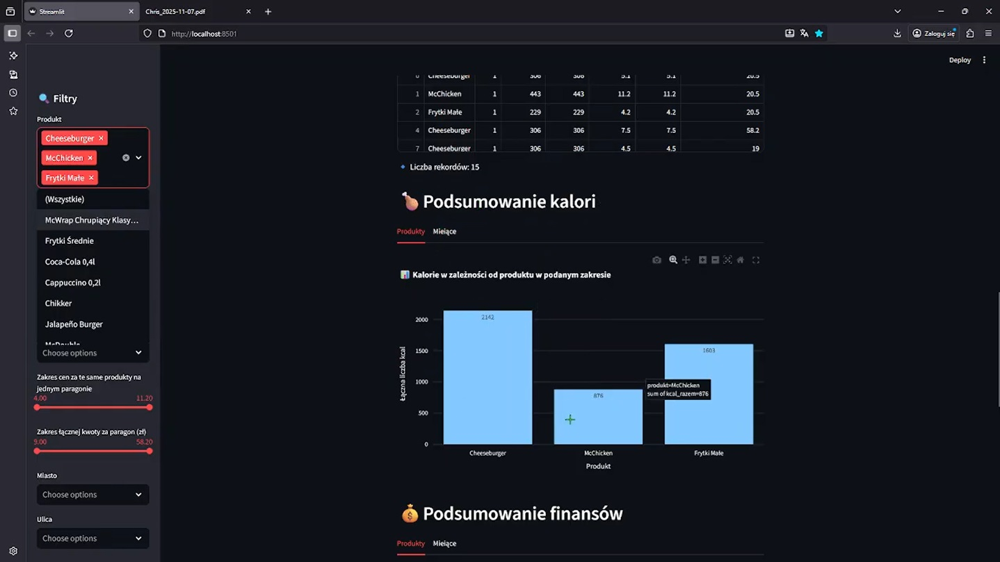

M_cal. FitTrack AI 🏋️♂️
An application for tracking expenses and calories purchased at McDonald’s. 🍔
( Proof of concept )
The application was created for educational purposes only.
Added 09.11.2025
Simple Description
An application that, based on photos of receipts and using the AI model "GTP-4o-mini", provides information about the user's expenses and calorie intake. It allows filtering of the data from various perspectives:
-
individual products,
-
quantities of purchased products,
-
prices of individual products,
-
total receipt amount,
-
date,
-
and place of purchase.
After filtering the data and adding information from the user, it can be sent to the AI model, which will create a simplified workout plan that can be saved as a PDF and optionally implemented.
The application also creates a kind of database, allowing users to save and upload CSV files previously created with it and add new data, enabling the user to track their expenses and calories in individual months.
The application also retrieves a PDF containing the nutritional values table from McDonald's Poland. It processes the PDF and creates a usable calorie table in JSON format.
Pervormeance Video Tech Video PDF and json parsing Video
App
GitHub Data frame and recipt storage
Installation and Setup
Create the main project folder cd m_cal
Clone the repository git clone https://github.com/twoj-nick/fittrack-ai.git
Or using Conda: conda env create -f environment.yml conda activate m_cal
Using terminal type `streamlit run app.py`
Alternative dependencies pip install -r requirements.txt
Features
📄 Ability to download a PDF file containing the “Nutritional Values Table” from the McDonald’s website.
✍🏻 Creation of a JSON file with calorie and nutritional values for individual products extracted from the nutritional table PDF, or adding new entries to an existing file.
📷 Reading information from receipt images and automatically generating a DataFrame using AI.
📄 Loading an existing user DataFrame and adding new data from scanned receipts.
📄 Parsing receipt data and merging it with nutritional information extracted from the PDF using AI.
📊 Filtering of user data based on selected parameters.
📊 Visualization of data through interactive charts.
💾 Export of filtered data to CSV or Excel formats.
💾 Option to rename filtered datasets before export.
🤖 Generation of a personalized AI-based training plan.
💾 Saving the generated training plan as a PDF.
Project Goal:
The goal of the project was to create an application that works with real data and addresses the problems arising from it.
Did I completely solve this problem?
No.
I managed to realize how big this challenge is and how a large corporation can tightly protect its data, even though it is publicly available.
The resources required to create a fully functional application are like the 'Holy Grail' 🏆—not everyone has access to them.
Challenges:
1. Data Parsing
Extracting data from a receipt photo was not the most difficult part. Parsing the data proved to be much more complicated.
Examples – product information on a receipt:
-
"FL_Wan_Lio_Czek" – "McFlurry with vanilla KitKat flavor and chocolate topping"
-
"WrapChrup Klas", "Wpar Chrup Klas" – only 2 parses for the product "McWrap Crispy Classic"
AAnd there are hundreds of such parses. There are combo meals, extended combos, individual products, add-ons, etc.
I limited myself to a few dozen. I do not have, and even if I did, I would not show access to the files that would allow full parsing!
2. Extracting Data from the PDF with the Nutritional Values Table
The PDF officially available on McDonald's website is not a table, it is TEXT. Additionally, it contains a lot of information. Sending all this information to an LLM would make the prompt too large—it would get cut off.
Chunking also failed—I was getting jumbled responses, as the LLM received information delivered without a sensible structure and mixed up the numbers.
ONLY the creation of the function new_caloris_table_from_pdf_json in the file src/pdf_parser/pdf_parser.py, which took the text as an argument, created markers as strings, then from the marker STRING A to the marker STRING B: listed product names, took 5 numbers, created key-value pairs, and saved them to JSON; then continued from STRING B to STRING C, etc., finishing at a specified string as the last key-value pair.
3. What to display, what to filter?
From an end-user perspective, I think there are too many filters.
From a Data Scientist perspective, I think it’s fine.
4. Creating an application that, upon launch, automatically generates all the necessary files and folders
The application creates:
-
a "main_dataframe" folder with a 'main.csv' file as a template, which we modify and save data to; its name can also be changed.
-
a "logs" folder with logs.log containing logs of scraping the official PDF.
-
a "pdf" folder where the official PDF is saved.
-
a "json_calories_table" folder where the file "offer_classic.json" is created, which is used later.
-
a "receipt" folder for receipt photos.
-
a "temporary_json_from_receipt" folder with a temporary JSON file obtained from the receipt.
-
a "temporary_json_parsed" folder with a temporary parsed JSON file, where information is saved to the dataframe.
5. Creating a modular application.
Developing an application with multiple modules that work together.
It was successful 😊
6. Writing a letter 💌
Creating the application in such a way that function names are clear, logical, self-explanatory, and the workflow can be easily followed.
Did it succeed? I don’t know, it’s not for me to judge. 🤔
But it is definitely not absolute spaghetti.
Weak points
-
In its current form, the application is not suitable for deployment in the cloud. I would have to give up parsing. It also dynamically creates files and folders—I would need to either give that up or save and read them from buckets 🪣.
-
Due to the limited parsing of products adapted for operation in a large-scale system, the application may sometimes skip certain products as duplicates, even within its limited functiona
Project Structure
m_cal/ ├── app.py # Main Streamlit application file ├── src/ │ ├── pdf_parser/ # Modules for PDF parsing │ ├── data/ # Data export (CSV, Excel, PDF) │ ├── ai_trainer/ # AI-powered training plan generation │ ├── pltos/ # Visualizations and charts │ └── utils/ # Utility and helper functions │ ├── json_calories_table/ # Static calorie table in JSON format ├── logs/ # Application logs ├── main_dataframe/ # Template for base dataframe ├── pdf/ # Nutrition table PDFs ├── receipt/ # Dynamic receipt image storage ├── temporary_json_from_receipt/ # Temporary JSONs generated from receipts ├── parsed_json_for_user_dataframe/ # Final parsed JSONs for dataframe creation │ └── requirements.txt # Python dependencies
Mini spec:
python 3.11
pandas
pathlib
streamlit
numpy
logging
urllib.parse
dotenv
openai
openpyxl
fpdf2
pdfplumber
plotly.express
requests
environment.yam and requirements.txt are in github
📧 email:
krzysztof.zakrzewski@protonmail.com
Appearance of the application
